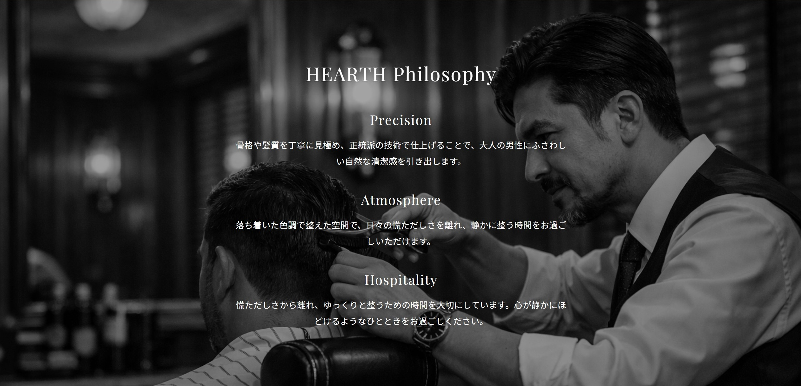
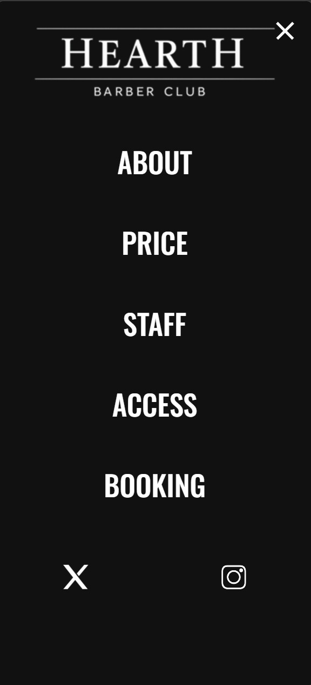
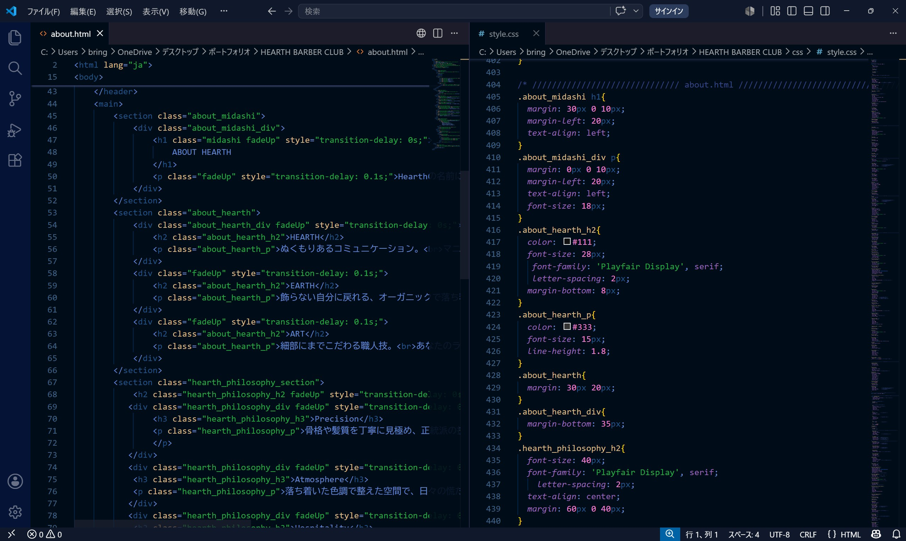
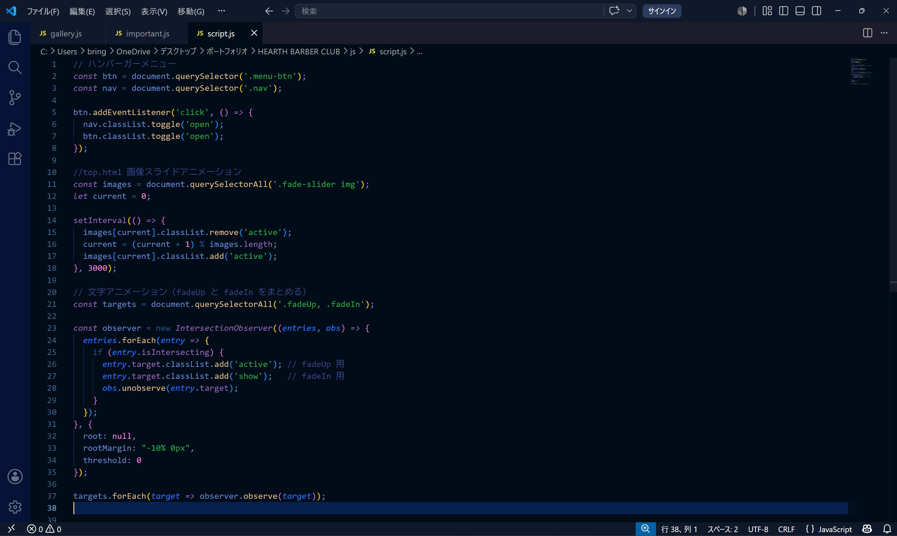
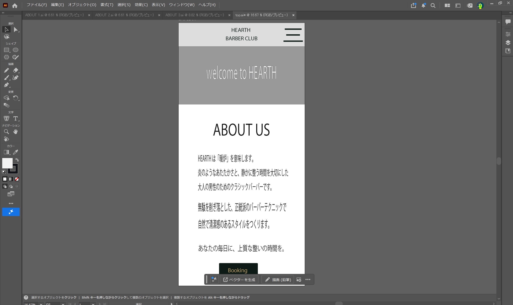
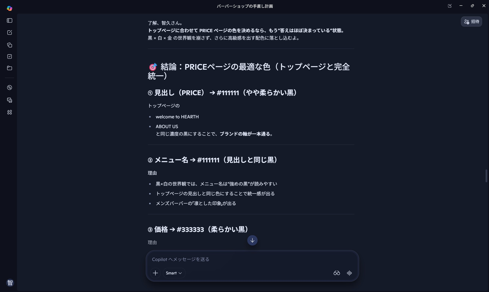
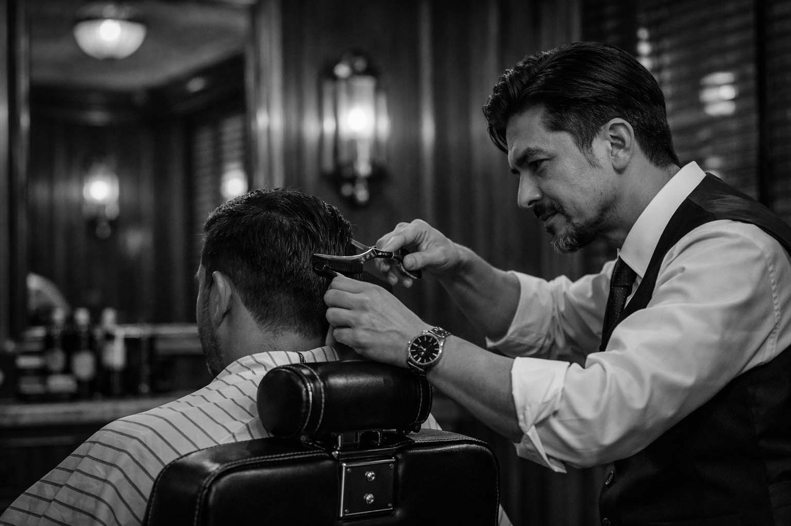

HEARTH BARBER CLUB（架空のバーバーショップ）
黒と白を基調に、金のアクセントを添えて、
静かで高級感のある世界観を丁寧に表現したバーバーショップサイトです。
製作期間 14日間
使用ツール HTML / CSS / JavaScript / Copilot（構成補助・画像生成）
デザインのコンセプト

HEARTH BARBER CLUBでは、黒と白を基調に、控えめな金のアクセントを添えることで、静かで上質な空気感を大切にしたクラシックバーバーの世界観を表現しています。
アニメーションは控えめにし、落ち着いた大人の雰囲気を損なわないように演出しています。
余白を広く取ることで、静かに佇むような高級感を感じられる印象に仕上げています。
工夫した点
写真の調整
お店の“静かでクラシックな空気感”が伝わるように、写真の明るさ・コントラスト・色味を丁寧に整えています。
黒を基調とした高級感を損なわないよう、暗すぎず明るすぎない絶妙なトーンに仕上げています。
全ページで写真の雰囲気が統一されるように調整し、ブランドの世界観が自然に伝わるようにしています。
レイアウトと見やすさ
余白を広めに取り、静けさと上品さが感じられるレイアウトを意識しています。
角丸は控えめにし、黒 × 白 × 金の配色が引き立つように構成しています。
PRICEやACCESSは視線の移動が少なくなるように整理し、初めて訪れる方でも迷わず閲覧できるようにしています。
スマホ版の使いやすさ

スマートフォンでは画面の狭さを考慮し、文字サイズ・余白・階層構造を丁寧に調整しています。
タップしやすい高さや、指の動きに合わせた余白を確保し、落ち着いた操作感を目指しました。
メニューはスマートフォン専用のデザインに整え、ブランドの雰囲気を損なわないようにしています。
JavaScriptによる操作性
トップページのメイン画像にはフェードアニメーションを採用し、
“静かに整う時間”が自然に伝わるように動きを最小限に抑えています。
ABOUTでは、一文ごとにふわっと浮かぶアニメーションを入れ、
語りかけるような静かな印象を演出しました。
必要以上に動かさず、落ち着いた世界観を保ちながら、閲覧体験を自然に整えています。
苦労した点
「静か」「クラシック」「高級感」を崩さず、Webとして機能させるバランスを取ることに最も苦労しました。
配色・余白・写真のトーンを何度も調整し、“派手すぎず、でも高級感がある”という絶妙なラインを探り続けました。
また、JavaScriptによるアニメーションは得意ではありませんでしたが、AIの提案をそのまま使うのではなく、自分の感覚に合わせて細かく調整し、HEARTHらしい静かな動きに整えています。
制作したページ一覧
使用ツール
-
HTML / CSS：サイト全体の構造設計と、静かで上品なデザインの実装に使用

-
JavaScript：メニューの開閉や画像のアニメーションなど、自然な操作感を加えるために使用

-
Illustrator：ワイヤーフレームや初期レイアウトの作成に使用

-
Copilot：構成の整理、文章の下書き、デザインの方向性確認の補助として活用

世界観の統一

写真・色・文字のトーンを丁寧に揃え、
黒と白を基調にした静かで上品な世界観を統一しました。
余白の取り方やアニメーションの速度も整え、
クラシックな落ち着きが自然に伝わるようにしています。
サイト全体を通して、
“静かに整う時間”というブランドの想いが途切れないように
細部まで丁寧にデザインしました。
ひとこと
クラシックな静けさを大切にしながら、上品で落ち着いた世界観を崩さないよう丁寧に制作しました。
訪れる人が迷わず心地よく過ごせるよう、シンプルで整った設計を心がけています。